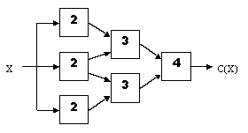
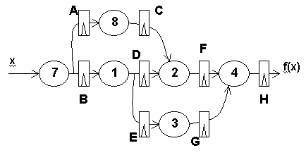

Pipelining
Problem 1.
Consider the following combinational logic circuit constructed from 6
modules. In the diagram below, each combinational component is marked
with its propagation delay in seconds; contamination delays are zero
for each component.

-
 What is the latency and throughput of this combinational circuit?
What is the latency and throughput of this combinational circuit?
-
Place the smallest number of ideal (zero delay, zero setup/hold
time) pipeline registers in the circuit above so as to maximize its
throughput. Remember to place a register on the output.
-
What is the latency and throughput of your pipelined circuit?
-
We can simulate a pipelined version of a slow component by replicating
the critical element and alternating inputs between the various
copies. Complete the circuit diagram below to create a 2-way
interleaved version of the "30" component:

-
Substituting the interleaved implementation for the original "30"
module as shown in the diagram below, place the smallest number of
ideal (zero delay, zero setup/hold time) pipeline registers in the
circuit below so as to maximize its throughput. Remember to place a
register on the output. (Draw the pipeline registers in the diagram
below.)

-
What is the latency and throughput of your newly pipelined circuit?
-
In general, if we take a combinational circuit and pipeline it using
ideal (zero delay, zero setup/hold time) registers, which one of the
following statements best describes the resulting change in the
circuit's latency and throughput:
A. The throughput may improve but the latency definitely does not.
B. Both the throughput and latency may improve.
C. The throughput definitely improves and the latency definitely gets worse.
D. The latency may improve but the throughput definitely does not.
E. The throughput definitely improves and the latency definitely does not.
Problem 2.
Partial Products, Inc., has hired you as its vice president in charge
of marketing. Your immediate task is to determine the sale prices of
three newly announced multiplier modules. The top-of-the-line Cooker
is a pipelined multiplier. The Sizzler is a combinational
multiplier. The Grunter is a slower sequential multiplier. Their
performance figures are as follows (T is some constant time interval):
Throughput Latency
Cooker 1/T 5T
Sizzler 1/4T 4T
Grunter 1/32T 32T
Customers follow a single principle: Buy the cheapest combination of
hardware that meets my performance requirements. These requirements
may be specified as a maximum allowable latency time, a minimum
acceptable throughput, or some combination of these. Customers are
willing to try any paralleled or pipelined configuration of
multipliers in an attempt to achieve the requisite performance. You
may neglect the cost (both financial and as a decrease in performance)
of any routing, latching, or other hardware needed to construct a
configuration. Concentrate only on the inherent capabilities of the
arrangement of multipliers itself.
It has been decided that the Cooker will sell for $1000. The
following questions deal with determining the selling prices of
Sizzlers and Grunters.
-
How much can you charge for Sizzlers and still sell any? That is, is
there some price for Sizzlers above which any performance demands that
could be met by a Sizzler could also be met by some combination of
Cookers costing less? If there is no such maximum price, indicate a
performance requirement that could be met by a Sizzler but not by any
combination of Cookers. If there is a maximum selling price, give the
price and explain your reasoning.
-
How little can you charge for Sizzlers and still sell any Cookers? In
other words, is there a price for the Sizzler below which every
customer would prefer to buy Sizzlers rather than a Cooker? Give and
explain your answer, as above.
-
Is there a maximum price for the Grunter above which every customer
would prefer to buy Cookers instead? As before, give the price, if it
exists, and explain your reasoning in either case.
-
Is there a minimum price for the Grunter below which every customer
would prefer to buy Grunters rather than a Cooker? Once again, give
the price, if it exists, and explain your reasoning in either case.
-
Suppose that, as a customer, you have an application in which 64 pairs
of numbers appear all at once, and their 64 products must be generated
in as short a time as practicable. You have $1000 to spend. At what
price would you consider using Sizzlers? At what price would you
consider using Grunters?
Problem 3.
Peculiar Peripherals, Inc. Builds a combinational encryption device
constructed of nine modules as follows:

The device takes an integer value X and computes an encrypted
version C(X). In the diagram above each combinational component is
marked with its propagation delay in microseconds; contamination
delays are zero for each component.
-
What is the latency and throughput of the combinational encryption
device?
-
Redraw the diagram marking the locations for ideal (zero-delay)
registers that will pipeline the device for maximal throughput.
Ensure a register at the output and use the minimum number of
registers necessary.
-
Give the latency and throughput of your pipelined version.
Again assume ideal registers.
Problem 4.
Consider the following combinational encryption device constructed
from six modules:

The device takes an integer value, X, and computes an encrypted
version C(X). In the diagram above, each combinational component is
marked with its propagation delay in seconds; contamination delays are
zero for each component.
In answering the following questions assume that registers added to
the circuit introduce no additional delays (i.e., the registers have a
contamination and propagation delay of zero, as well as zero setup and
hold times). Any modifications must result in a circuit that obeys
our rules for a well-formed pipeline and that computes the same
results as the combinational circuit above. Remember that our
pipeline convention requires that every pipeline stage has a register
on its output.
When answering the questions below, if you add a register to one of
the arrows in the diagram, count it as a single register. For
example, it takes two registers to pipeline both inputs to the
rightmost module (the one with latency 4).
-
What is the latency of the combinational encryption device?
-
If we want to increase the throughput of the encryption device,
what is the minimum number of registers we need to add?
-
If we are required to add exactly 5 registers, what is the best
throughput we can achieve?
-
If we can add as many registers as we like, is there an upper
bound on the throughput we can achieve?
-
If we can add as many registers as we like, is there a lower
bound on the latency we can achieve?
Problem 5.
Consider the following pipelined circuit: The number written on top of
each combinational element indicates its propagation delay in
nanoseconds. Assume that the pipeline registers shown are ideal (they
have a propagation delay, contamination delay, hold-time and a set-up
time of 0 ns).

-
What is the minimum clock period for which we can expect the given
circuit to operate correctly?
-
What is the minimum latency of the circuit as shown?
-
If the registers labeled F and G are removed, describe the
resulting circuit's behavior.
-
Assume you were to redesign the pipelining of the given circuit
to achieve the maximum possible throughput with minimum latency. What
is the minimum number of pipeline registers required (including
register H)?
-
If the pipeline registers in the given circuit were all replaced
with non-ideal pipeline registers having propagation delays of 2 ns,
set-up times of 1 ns, and hold times of 0 ns, what would be the
maximum throughput achievable with the supplied six combinational
modules?
-
If the pipeline registers in the given circuit were all
replaced with non-ideal pipeline registers having propagation delays
of 2 ns, set-up times of 1 ns, and hold times of 0 ns, how long before
the system clock must the input x be set-up to assure that the
pipeline registers A and B do not go into a metastable state?
-
Suppose that a second output, g(x), is desired from the given
circuit. It provides the partial result present at the output of the
pipeline register labeled C. If we wish the outputs f(x) and g(x) to
correspond to the same input after each clock, how many new pipeline
registers should be added to the circuit shown?
Problem 6.
You have the task of pipelining a combinational circuit consisting
entirely of 2-input NAND gates with 1ns propagation delay by adding
registers having tS=1ns, tH=1 ns, tPD=2 ns and tCD=1 ns. The
propagation delay of the original combinational circuit is 20 ns.
-
Assuming you add the minimum number of registers to pipeline the
circuit for maximal throughput, what is the latency of the resulting
pipelined circuit?
Problem 7.
Circuits Maximus, Inc. makes circuits which compute the maximum of two unsigned
binary numbers. They are constructed using combinational 1-bit Maximizes modules
which are cascaded to deal with longer words, as shown below:

This diagram show a 4-bit Maximizer chain which computes at the M outputs the
larger of the A or B input operands. Each Maximizer module takes the Ith bit
of each of two binary operands, A and B, as well as comparison outputs from the
next higher-order Maximizer module in a chain, as shown below:

A "1" on either of the inputs AGin and BGin from the next higher-order module
signals that A or B, respectively, is greater; both inputs are zero if the higher-order bits
are identical. The M module computes the output values AGout and BGout from AGin, BGin,
Ai and Bi and sends these outputs values to the next lower-order M module. It also
passes either Ai or Bi as the Mi output, denoting the Ith bit of the maximum of A
and B.
An implementation has been developed for the M module that has 10ns propagation
delay and a 2ns contamination delay.
-
Assuming that use of ideal registers, mark the previous diagram to show a 4-bit
Maximizer pipelined for maximum throughput.
-
To compute the maximum value of N inputs (N > 2), the following structure is
proposed:
 In this circuit, the maximum of four 4-bit unsigned numbers is
computed and appears at the output M3..M0.
What is the latency and throughput of this combinational circuit,
assuming that each M module has a propagation delay of 10ns?
In this circuit, the maximum of four 4-bit unsigned numbers is
computed and appears at the output M3..M0.
What is the latency and throughput of this combinational circuit,
assuming that each M module has a propagation delay of 10ns?
-
Show how this circuit can be pipelined from maximum throughput
using a minimum number of pipeline stages. Remember to include a
register at each output.
Problem 8.
The following combinational circuit takes a single input
and produces a visual output by lighting the light on the center
component module.

Consider the result of pipelining the above circuit for maximum
throughput, using the minimum number of registers necessary. The
result would be a pipeline such that input asserted during clock
period I produces the proper output on the light during clock
period I+K (we want minimal K which gives maximal throughput).
-
How many registers should appear on the bold wire (marked X) in
the pipelined version of the above circuit?